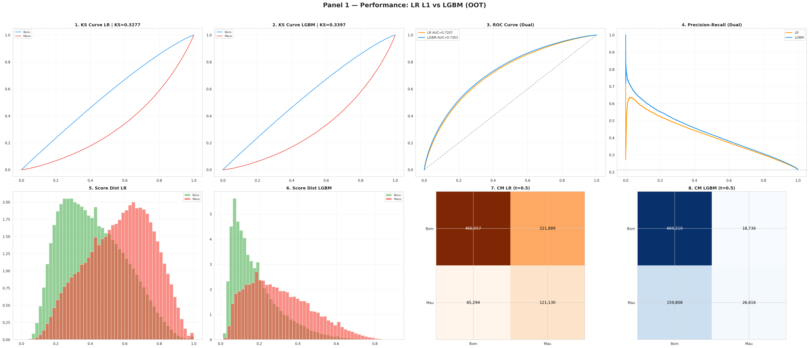
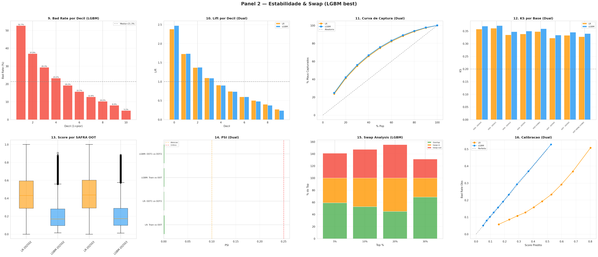
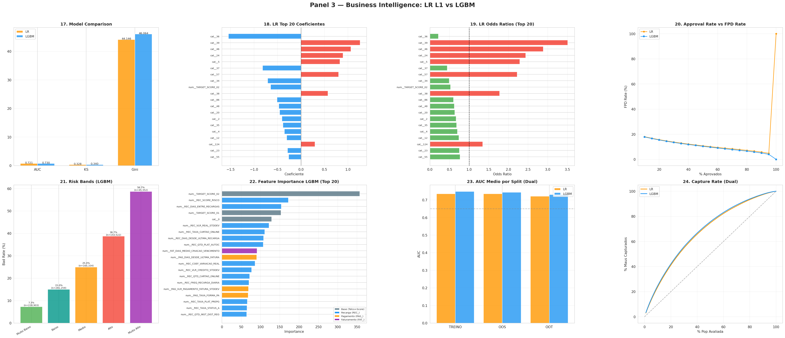
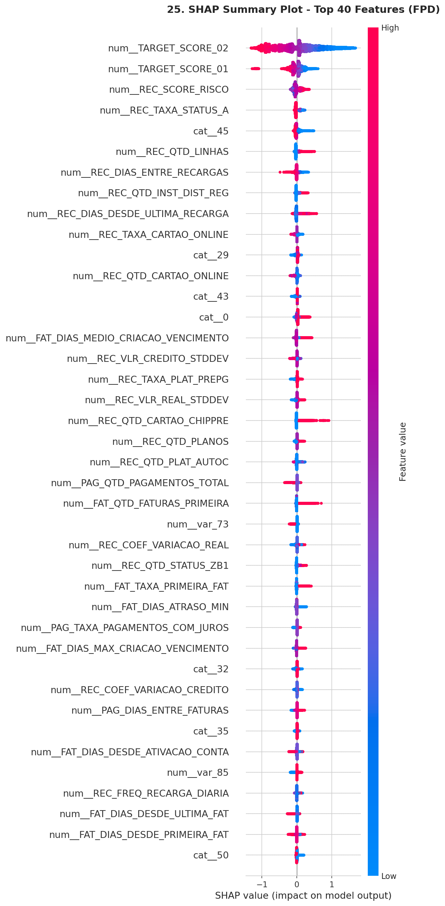

Pipeline de dados e Machine Learning para predição de First Payment Default em clientes de telecomunicações
Clientes migrando de planos Pré-pago para Controle representam um risco de crédito que precisa ser quantificado. Este projeto constrói um score de risco que prediz a probabilidade de inadimplência no primeiro pagamento (FPD), permitindo decisões de crédito mais assertivas.
Desenvolvido em parceria com Claro e Oracle na plataforma Microsoft Fabric, o pipeline processa 3.9 milhões de registros com 402 colunas consolidadas (398 features) extraídas de dados transacionais, comportamentais e demográficos.
O LightGBM supera o benchmark do Score Bureau em +0.87 pp de KS, com estabilidade temporal validada (PSI < 0.002).
| Modelo | KS (OOT) | AUC (OOT) | Gini (OOT) | KS (OOS) | AUC (OOS) |
|---|---|---|---|---|---|
| LightGBM (baseline) | 33.97% | 0.7303 | 46.06 pp | 35.89% | 0.7437 |
| Logistic Regression L1 | 32.77% | 0.7207 | 44.15 pp | 34.79% | 0.7347 |
| Benchmark (Score Bureau) | 33.10% | — | — | — | — |
| Decil | Taxa Default | Score Médio | Lift | Acumulado Bad |
|---|---|---|---|---|
| 1 (maior risco) | 52.73% | 0.525 | 2.47x | 24.7% |
| 2 | 36.98% | 0.367 | 1.73x | 42.1% |
| 3 | 29.31% | 0.286 | 1.37x | 55.8% |
| ... | ||||
| 10 (menor risco) | 5.07% | 0.049 | 0.24x | 100% |
Painéis gerados automaticamente com métricas de performance, estabilidade e impacto no negócio.




Pipeline Bronze → Silver → Gold executado no Microsoft Fabric com PySpark e Delta Lake.
| Atributo | Valor |
|---|---|
| Tabela | Gold.feature_store.clientes_consolidado |
| Granularidade | NUM_CPF + SAFRA (YYYYMM) |
| Registros | ~3.9 milhões |
| Colunas | 402 (90 REC_ + 94 PAG_ + 114 FAT_ + 103 base + 1 audit) |
| SAFRAs | 202410 a 202503 (6 períodos) |
| Target | FPD (First Payment Default) — binário {0, 1} |
Pipeline de 4 etapas: 398 features → 59 finais (redução de 85%)
| Modelo | Tipo | Configuração |
|---|---|---|
| Logistic Regression (L1) | Baseline interpretável | penalty="l1", solver="liblinear", C=0.5 |
| LightGBM (GBDT) | Ensemble tree-based | n_estimators=250, max_depth=4, lr=0.05 |
| Conjunto | SAFRAs | Registros | Uso |
|---|---|---|---|
| Treino | 202410, 202411, 202412 | ~1.35M | Treinamento do modelo |
| Validação (OOS) | 202501 | ~450K | Validação in-sample |
| Teste (OOT) | 202502, 202503 | ~870K | Teste temporal out-of-time |
FAT_VLR_FPD identificado como cópia direta do target e removidoFramework mensal com alertas automáticos de drift por feature e score.
| Métrica | Verde | Amarelo | Vermelho |
|---|---|---|---|
| PSI Score | < 0.10 | 0.10 – 0.25 | > 0.25 |
| PSI Features | < 0.10 | 0.10 – 0.20 | > 0.20 |
| KS Drift | < 5.0 pp | — | > 5.0 pp |
| AUC Drift | < 0.03 | — | > 0.03 |
REC_DIAS_ENTRE_RECARGAS, PSI=1.35).
8 etapas sequenciais executadas no Microsoft Fabric.
| # | Etapa | Script | Output |
|---|---|---|---|
| 1 | Ingestão | src/ingestion/ingestao-arquivos.py | Bronze (staging) |
| 2 | Tipagem | src/metadata/ajustes-tipagem-deduplicacao.py | Silver (rawdata) |
| 3 | Dimensões | src/ingestion/criacao-dimensoes.py | dim_calendario + dim_cpf |
| 4a | Book Recarga | src/feature-engineering/book_recarga_cmv.py | 90 features (REC_*) |
| 4b | Book Pagamento | src/feature-engineering/book_pagamento.py | 94 features (PAG_*) |
| 4c | Book Faturamento | src/feature-engineering/book_faturamento.py | 114 features (FAT_*) |
| 4d | Consolidação | src/feature-engineering/book_consolidado.py | Gold (402 colunas) |
| 5 | Modelo | src/modeling/modelo_baseline.ipynb | LR L1 + LightGBM |
| 6 | Scoring | src/modeling/scoring-batch.ipynb | Score 0–1000 |
| 7 | Validação | src/modeling/validacao-deploy.ipynb | KS / AUC / Gini |
| 8 | Monitoramento | src/modeling/monitoramento-drift.ipynb | PSI + Drift |